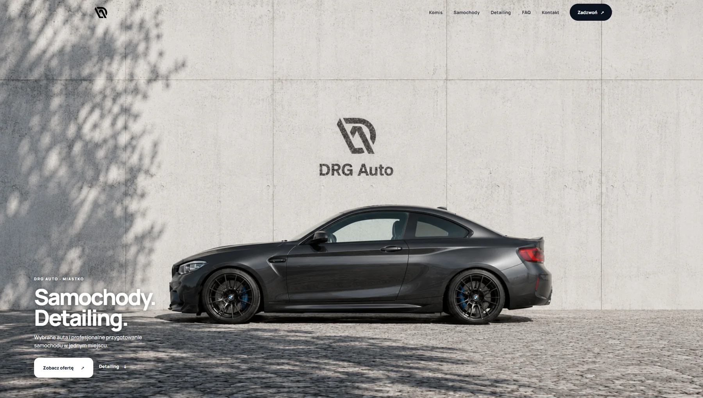
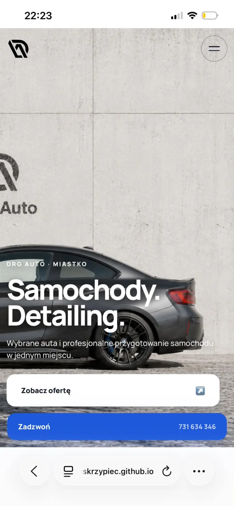

01
Wyzwanie
Komis i detailing to dwie różne grupy klientów. Wrzucone na jedną stronę bez pomysłu zaczynają sobie przeszkadzać: kupujący auto gubi się w usługach, a klient detailingu nie wie, czy trafił pod właściwy adres.
Komis i detailing · Miastko
Dwie usługi na jednej stronie — sprzedaż samochodów i detailing — bez mieszania ich ze sobą.

01
Komis i detailing to dwie różne grupy klientów. Wrzucone na jedną stronę bez pomysłu zaczynają sobie przeszkadzać: kupujący auto gubi się w usługach, a klient detailingu nie wie, czy trafił pod właściwy adres.
02
Mocny, kontrastowy hero ustawia markę, a zaraz pod nim strona rozdziela się na dwie wyraźne ścieżki. Doszła sekcja FAQ zdejmująca powtarzalne pytania i wyeksponowany numer telefonu — w tej branży klient najpierw dzwoni, a dopiero potem pisze.
03
Jeden adres dla obu usług, bez chaosu. Telefon dostępny z każdego miejsca na stronie, na komputerze i na telefonie.
Wersja mobilna
Każdy projekt powstaje równolegle w dwóch układach. To nie jest wersja okrojona — to ta sama strona, przełożona na mniejszy ekran.

Napisz kilka zdań o firmie — odeślę wycenę i termin.